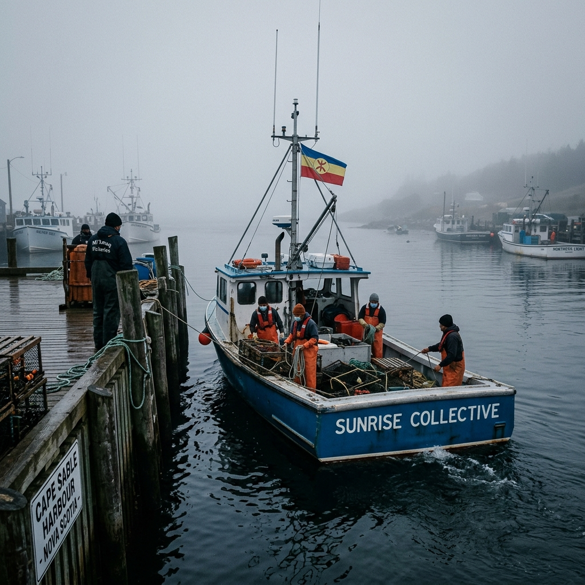

An inquiry-based legal simulation for Mi'kmaw Studies 11, bridging historical treaties with modern coastal governance.

Sunrise Harbour places students in the high-stakes role of Chair of the Sunrise Harbour Authority. Tasked with brokering a constitutional peace between conflicting legal jurisdictions on a shared municipal wharf, students must move beyond simple debate into the rigorous world of policy drafting.
The simulation serves as a "Policy Command Center" where students analyze historical treaties, modern legal precedents, and field intelligence to draft the 2026 Wharf Accord.
The simulation is grounded in the "Living Treaty" doctrine and actual events that have shaped Nova Scotia’s maritime history. It forces students to engage with the evolution of the 1760/61 Peace and Friendship Treaties and the landmark R. v. Marshall decision.
By explicitly referencing the 2020 flashpoints at Saulnierville and Middle West Pubnico, the simulation requires students to address the failure of law enforcement to protect treaty-holders from mob violence and arson, within a safe, inquiry-based environment.
This project is specifically designed to meet the following outcomes from the Mi'kmaw Studies 11 curriculum:
Analyze the role of Elders in maintaining law, protocol, and community values (Exhibit 04).
Explore the evolution of Treaty rights from the 18th century to the modern day (Exhibit 05).
Evaluate co-management models as a path toward economic self-determination (Exhibit 06).
Apply the Sparrow Test and the Honour of the Crown to modern resource management (Exhibit 02).